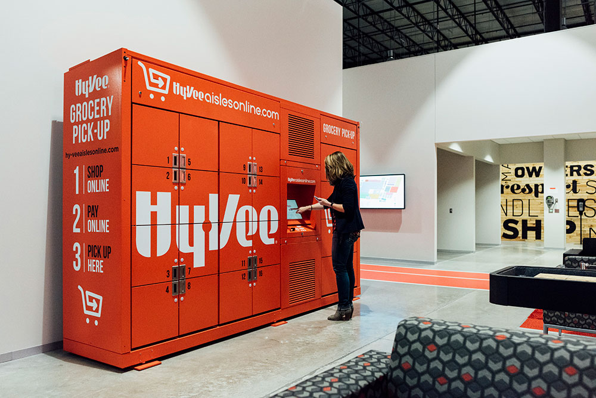

Product Design @ Hy-Vee
Due to confidentiality requirements, I'm unable to share most of my design work from Hy-Vee. If you'd like to discuss my experience further, please contact me.
Hy-Vee is a large grocery, pharmacy and food service retailer in the Midwest. The company is undergoing a radical digital transformation to stay ahead of the changing retail and grocery landscape. As part of the UI/UX team at Hy-Vee, I design and deliver digital solutions that make our customers' lives easier, healthier and happier.
I'm currently working with the mobile team to design and build a new customer-facing app. As the sole designer for the product, I'm responsible for UX research, customer flows, wireframes, UI/visual design and user testing. I'm also working with my engineering teammates to implement a design system and reusable/scalable React Native components for the platform.
I previously designed and tested Hy-Vee's food ordering kiosk as part of two-designer team. We synthesized business and customer requirements, produced user flows and wireframes and delivered hi-fidelity visual designs on a very tight timeline. I conducted in-person user testing with customers and helped the mobile team quickly iterate on and deploy UI improvements within one week. The kiosks currently serve customers in stores across the midwest.

Source